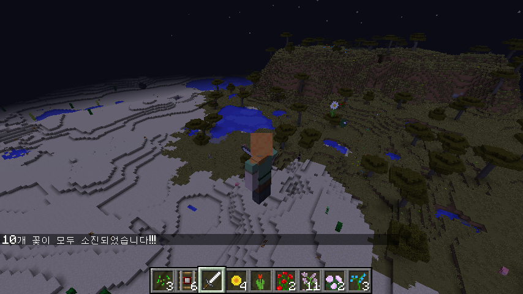

xwMOOC 데이터과학
1. 아이템 블록 중에 꽃 추려내기 1
마인크래프트 아이템이 상당히 많은데 그중에서 꽃마 추려낸다.
# 0. 환경설정 --------------------------------------------
library(miner)
library(tidyverse)
mc_connect("127.0.0.1")
# 1. 지나가며 꽃을 뿌리기 --------------------------------------------
data(mc_items)
flowers <- mc_items %>%
dplyr::filter(name %in% c("Sunflower", "Lilac", "Rose Bush", "Peony",
"Blue Orchid", "Red Tulip", "Pink Tulip", "Oxeye Daisy"))
DT::datatable(flowers)2. 지나온길 꽃을 뿌리다.
꽃중에서 하나를 난수로 뽑아 현재 플레이어 위치 바로 뒤에 꽃을 심고 1초당안 쉰다. 만약 10 초이 모두 소진되면 채팅창에 갖고 있던 모든 꽃을 다 소진했다며 메시지로 알려준다.
# 수중에 갖고 있는 꽃 갯수
num_flowers <- 10
while(TRUE) {
# 꽃을 하나 선택
this_flower <- sample_n(flowers, 1)
# 플레이어 위치
cur_pos <- getPlayerPos(tile = TRUE)
# 꽃을 뿌리기
setBlock(cur_pos[1]-1, cur_pos[2], cur_pos[3],
id = this_flower$id, style = this_flower$style)
# 1 초동안 쉬기
Sys.sleep(1)
# 탈출조건
if(num_flowers > 0) {
num_flowers <- num_flowers -1
} else {
chatPost("10개 꽃이 모두 소진되었습니다!!! ")
break
}
}